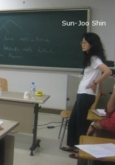

GAN00166 - Lógica para Ciência da Computação, 2023-1
Turma A1 - Segundas e quartas, 14-16h, sala IC-204
Turma B1 - Terças e quintas, 14-16h, sala IC-217
V1 - 10 de maio (quarta)
V2 - 03 de julho (segunda)
2a Chamada - 10 de julho (segunda)
VS - 17 de julho (segunda)
01 de maio (segunda) - Dia do Trabalho
V1 - 11 de maio (quinta)
V2 - 04 de julho (terça)
2a Chamada - 11 de julho (terça)
VS - 18 de julho (terça)
08 de junho (quinta) - Corpus Christi
LeiturasIntrodução:
|
. |  |
Faremos duas verificações de aprendizagem: (V1) e (V2). A média (M) será a média aritmética: (M) = (V1)+(V2) / 2.
A tolerância máxima de atraso em dias de verificação de aprendizagem é de 30 minutos. Por causa disso, não é permitido entregar a prova e sair antes de decorridos 30 minutos de prova.
Não é permitido durante a prova sair e retornar à sala (salvo em situação de urgência).
Não é permitido usar aparelhos eletrônicos (calculadora, celular, relógio, etc) durante a prova.
A 2a Chamada está aberta a todes e obrigatoriamente substitui uma das notas anteriores, (V1) e (V2), mesmo que a nota da 2a Chamada seja menor que as outras. Após decorridos 30 minutos de prova, você poderá optar por não fazera 2a Chamada (se optar por não fazer, não assinará a lista de presença).
Está aprovade quem tiver média maior ou igual a 6,0 e frequência igual ou superior a 75% (que corresponde a no máximo 7 faltas).
A VS - Verificação Suplementar seguirá as regras usuais da UFF: quem tiver frequência igual ou superior a 75% e média entre 4,0 e 5,9 pode fazer a VS, e estará aprovade se tiver nota maior ou igual a 6,0 na VS.
Qualquer dúvida, me escreva: renatafreitas @ id.uff.br.